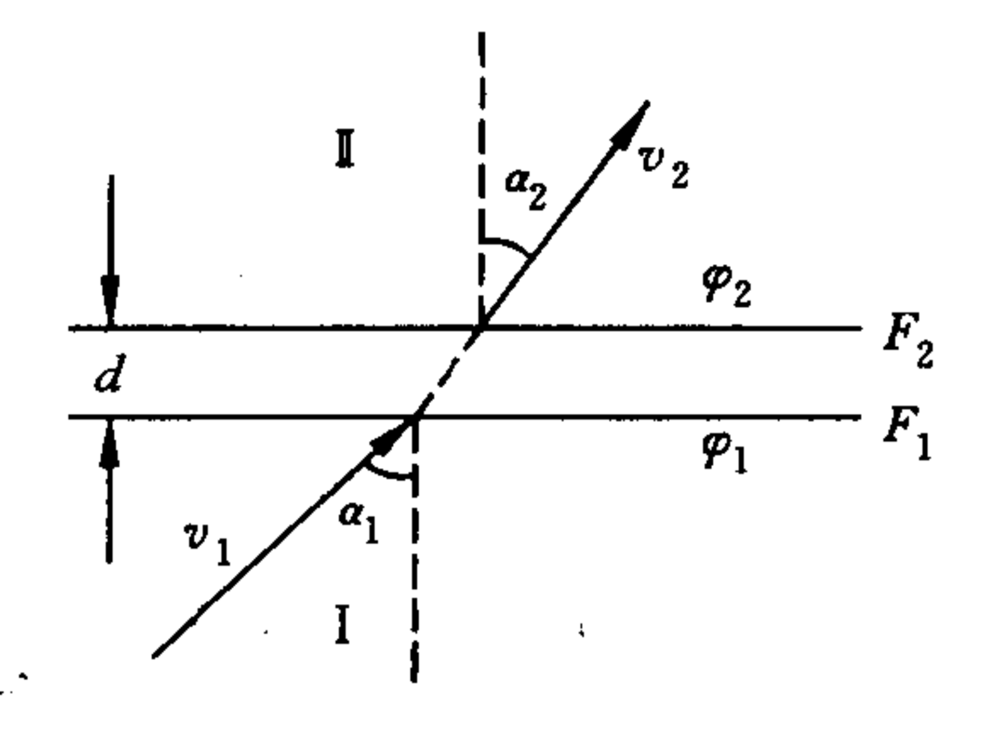
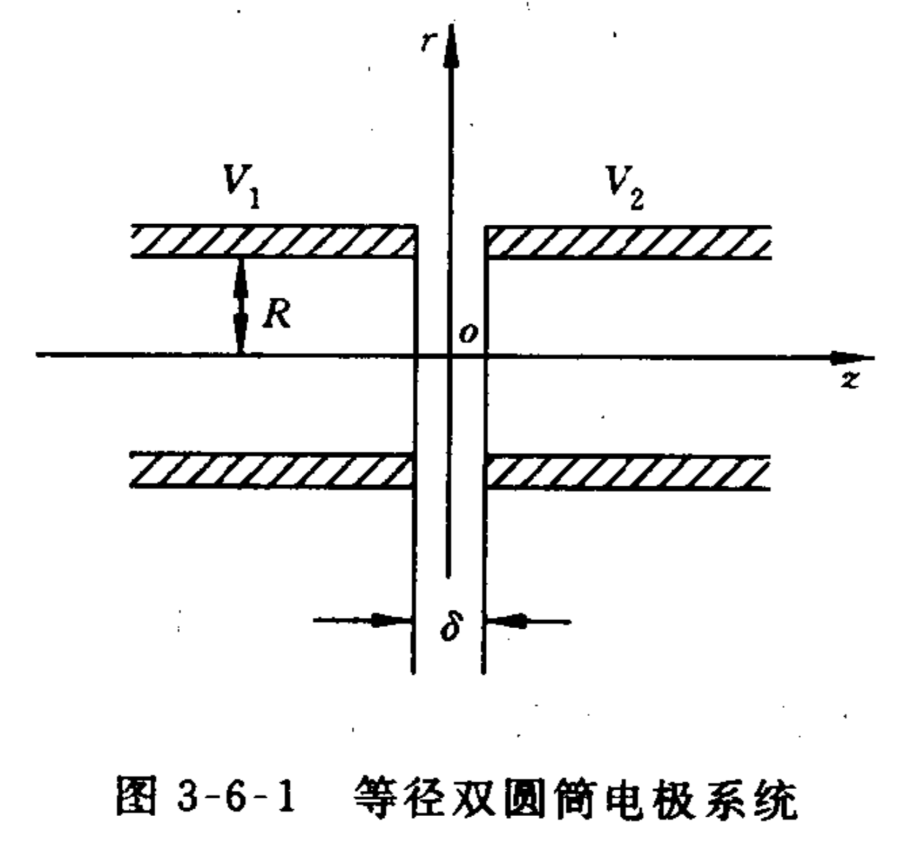
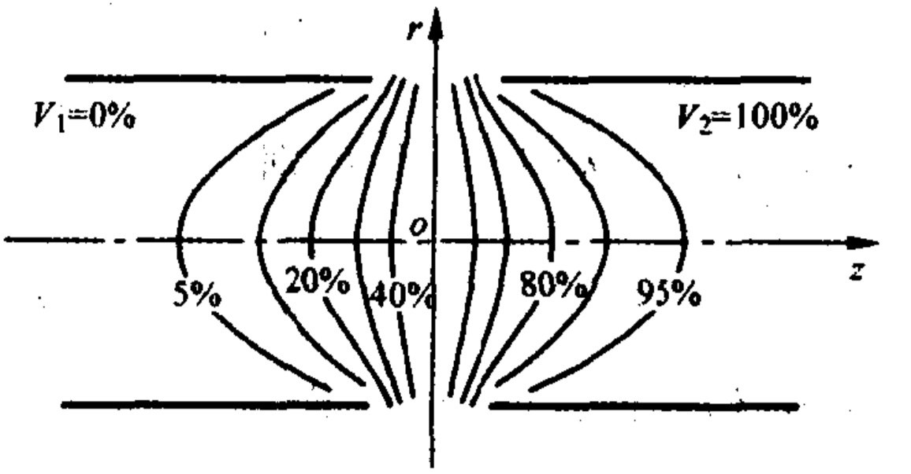
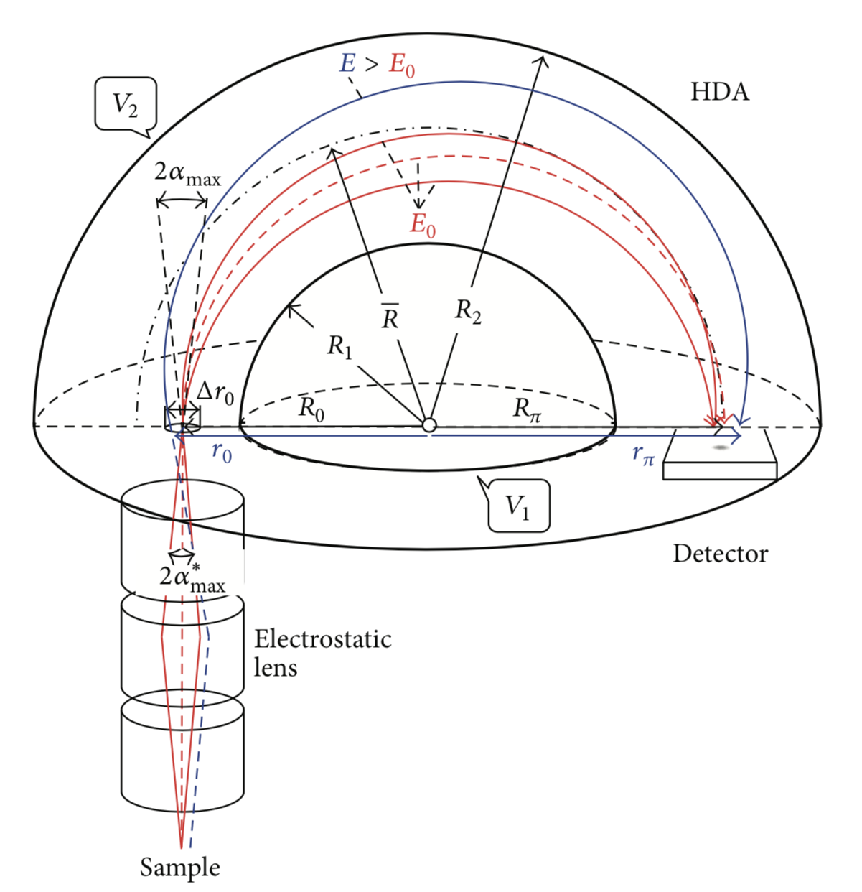
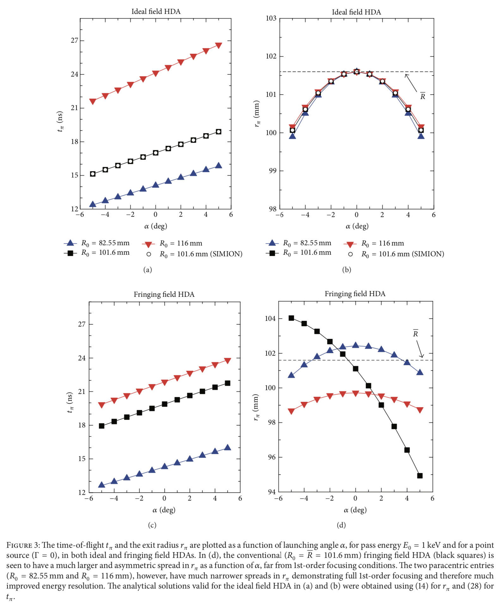
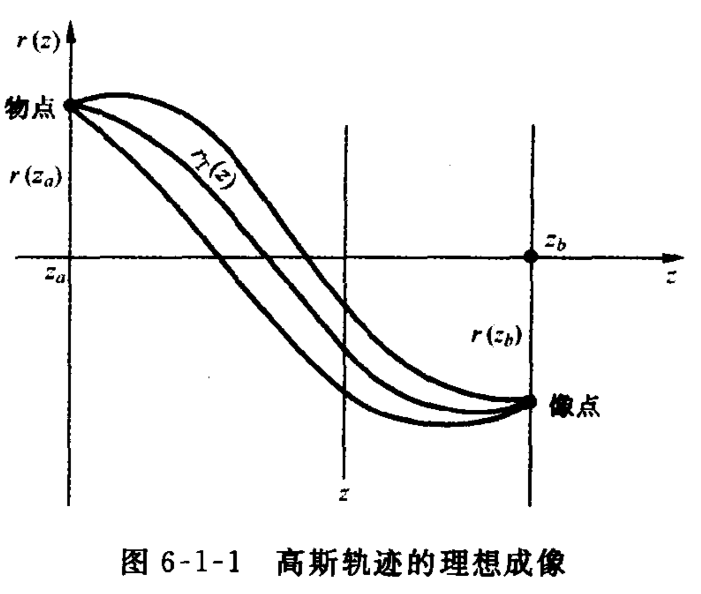

Hemisphere Deflector Analyzer
电子光学

电子从`\varphi_1`过渡到`\varphi_2`，其中`\varphi_1 \< \varphi_2`。
两平面间的电场强度为
\begin{equation} E=\frac{\varphi_2-\varphi_1}{d} \end{equation}
在I和II区间内的电子速度分别为
\begin{equation} v_1 = \sqrt{\frac{2e\varphi_1}{m}} \qquad v_2 = \sqrt{\frac{2e\varphi_2}{m}} \end{equation}
因为交界面处电场强度方向垂直于平面`F_1,F_2`，所以电子经过界面后平行界面的速度分量不变
\begin{equation} v_1 sin\alpha_1 = v_2 sin\alpha_2 \end{equation}
所以有
\begin{equation} \frac{sin\alpha_1}{sin\alpha_2} = \frac{v_2}{v_1} = \sqrt{ \frac{\varphi_1}{\varphi_2} } = n_{12} \end{equation}
这就是电子光学中的折射定律，可见电子光学中`\sqrt{\varphi}`对应于光学中的折射率n。
该体系中要求`F_1`和`F_2`之间的过度区域无限薄。
轴对称静电场的数学表达式
一些可能会用到的公式
\begin{equation} \nabla\varphi = \mathbf{e}_1 \frac{\partial \varphi}{h_1\partial q_1} + \mathbf{e}_2 \frac{\partial \varphi}{h_2\partial q_2} + \mathbf{e}_3 \frac{\partial \varphi}{h_3\partial q_3} \end{equation}
\begin{equation} \nabla\cdot\mathbf{D} = \frac{1}{h_1h_2h_3}\left[ \frac{\partial}{\partial q_1}\left(h_2h_3D_1\right)+ \frac{\partial}{\partial q_2}\left(h_1h_3D_2\right) + \frac{\partial}{\partial q_3}\left(h_1h_2D_3\right) \right] \end{equation}
\begin{equation} \nabla\times\mathbf{A} = \left| \begin{matrix} \frac{\mathbb{e}_1}{h_2h_3} & \frac{\mathbb{e}_2}{h_1h_3} & \frac{\mathbb{e}_3}{h_1h_3} \\ \frac{\partial }{\partial q_1} & \frac{\partial }{\partial q_2} & \frac{\partial }{\partial q_3} \\ h_1A_1 & h_2A_2 & h_3A_3 \end{matrix} \right| \end{equation}
\begin{equation} \nabla^2 \varphi = \frac{1}{h_1h_2h_3}\left[ \frac{\partial}{\partial q_1}\left(\frac{h_2h_3}{h_1}\frac{\partial\varphi}{\partial q_1}\right)+ \frac{\partial}{\partial q_2}\left(\frac{h_1h_3}{h_2}\frac{\partial\varphi}{\partial q_2}\right)+ \frac{\partial}{\partial q_3}\left(\frac{h_1h_2}{h_3}\frac{\partial\varphi}{\partial q_3}\right)\right] \end{equation}
拉美系数
\begin{equation} x = f_1(q_1, q_2, q_3 )\qquad y = f_2(q_1, q_2, q_3 ) \qquad z = f_3(q_1, q_2, q_3 )\end{equation}
\begin{equation} h_i^2 = \left(\frac{\partial x}{\partial q_i}\right)^2 + \left(\frac{\partial y}{\partial q_i}\right)^2 + \left(\frac{\partial z}{\partial q_i}\right)^2 \end{equation}
圆柱坐标系的拉美系数
\begin{equation} h_1 = 1\qquad h_2 = r\qquad h_3 = 1 \end{equation}
轴对称电场的幂级数表达式
由于场的旋转对称性
\begin{equation} \varphi(r,z) = \varphi(-r,z) \end{equation}
所以电位`\varphi`展开的幂级数只有偶次幂项
\begin{equation} \varphi(r,z) = \sum_{k=0}^\infty a_{2k}(z)r^{2k} \end{equation}
拉普拉斯方程
\begin{equation} \nabla^2\varphi = \frac{\partial^2 \varphi}{\partial z^2} + \frac{1}{r}\frac{\partial\varphi}{\partial r}+ \frac{\partial^2\varphi}{\partial r^2} = 0 \end{equation}
将级数代入可得
\begin{equation} \sum_{k=0}^\infty (2k)^2a_{2k}(z)r^{2k-2} + \sum_{k=0}^\infty a''_{2k}(z)r^{2k} = 0 \end{equation}
r的各种幂次项应为0
\begin{equation} a''_{2k-2}(z)+(2k)^2a_{2k}(z) = 0 \end{equation}
可得递推公式
\begin{equation} a_{2k}(z) = -\frac{1}{(2k)^2}a''_{2k-2}(z) \end{equation}
\begin{equation} a_{2k} = (-1)^k\frac{a_0^{(2k)}}{(2k)^2\times 6^2\times 4^2\times 2^2} = (-1)^k\frac{a_0^{(2k)}}{2^{2k}(k!)^2} \end{equation}
\begin{equation} \varphi(z,r) = \sum_{k=0}^\infty (-1)^{2k} \end{equation}
\begin{equation} \varphi(z,0) = a_0(z) = V(z) \end{equation}
所以`a_0(z)`就是轴上的电位分布，则有
\begin{equation} \varphi(r,z) = \sum_{k=0}^\infty (-1)^k\frac{1}{(k!)^2} \left(\frac{r}{2}\right)^{2k} V^{(2k)}(z) = V(z) - \frac{1}{4}V''(z)r^2+\frac{1}{64}V''''(z)^4r^4+...+ \end{equation}
此公式是电子光学的基本公式，被称为Scherzer公式。然而，实际上，只有在r比较小的区域，此级数收敛得才快，这时取级数的前几项就可以确定空间的场分布。如果想决定离轴较远处的场分布，就很不方便了。
轴对称电场的积分表达式
分离变量法
\begin{equation} \varphi(r,z) = R(r)Z(z) \end{equation}
代入拉普拉斯方程
\begin{equation} k^2\frac{1}{Rr}\frac{d}{dr}\left(r\frac{dR}{dr}\right) = -\frac{1}{Z}\frac{d^2Z}{dz^2} \end{equation}
设两边等式等于的常数为`k^2`，得到
\begin{equation} \frac{d^2Z}{dz^2} + k^2Z = 0 \end{equation}
\begin{equation} \frac{d^2R}{dr^2} + \frac{1}{r}\frac{dR}{dr} - k^2R = 0 \end{equation}
化简得到
\begin{equation} \frac{d^2}{d(ikr)^2} + \frac{1}{ikr}\frac{dR}{d(ikr)} +R =0 \end{equation}
上式是零阶贝塞尔方程，其解的一般形式为
\begin{equation} R(r) = C_1 J_0(ikr) + C_2N_0(ikr) \end{equation}
其中`J_0(ikr)`为零阶贝塞尔函数，`N_0(ikr)`为零阶诺依曼函数发散，故应该舍去次项
\begin{equation} \varphi(r,z) = Ae^{\pm ikx}J_0(ikr) \end{equation}
通解可表示为如下积分形式
\begin{equation} \begin{aligned} \varphi(r,z) &= \int_{-\infty}^{+\infty} A(k)e^{ikx}J_0(ikr)dk\\
&= \frac{1}{2\pi}\int_0^{2\pi}\int_{-\infty}^{+\infty} A(k)e^{ik(x+irsin\alpha)}dkd\alpha \end{aligned} \end{equation}
其中零阶贝塞尔函数的积分表达式为
\begin{equation} J_0(ikr) = \frac{1}{2\pi}\int_0^{2\pi} e^{-kr sin\alpha} \end{equation}
当r=0时
\begin{equation} \varphi(0,z) = V(z) = \int_{-\infty}^{+\infty} A(k)e^{ikx}dk \end{equation}
则可以得到
\begin{equation} V(z+irsin\alpha) = \int_{-\infty}^{+\infty}A(k)e^{ik(x+irsin\alpha)}dk \end{equation}
\begin{equation} \varphi(r,z) = \frac{1}{2\pi}\int_0^{2\pi} V(z+irsin\alpha)d\alpha \end{equation}
轴对称电场的调和级数展开式
假定轴上电位分布为
\begin{equation} V(z)=(z-z_0)^k\qquad k =0 ,1,2,... \end{equation}
代入Scherzer公式可得到满足满足拉普拉斯方程的调和多项式
\begin{equation} \begin{matrix}
k=0 && V(z) = (z-z_0)^0 = 1 && P_0=(z-z_0)^0=1 \\
k=1 && V(z) = z-z_0 && P_1=z-z_0\\
k=2 && V(z) = (z-z_0)^2 && P_2 = (z-z_0)^2-r^2/2\\
k=3 && V(z) = (z-z_0)^3 && P_3 = (z-z_0)^3 - 3r^2(z-z_0)/2\\
... && .... && ...
\end{matrix}\end{equation}
用这些调和多项式`P_k`可以构成描述轴对称电场的调和级数，即
\begin{equation}\varphi(r,z) = \sum_{k=0}^\infty C_kP_k(r,z-z_0) \end{equation}
r=0时
\begin{equation} \varphi(0,z) = \sum_{k=0}^\infty C_k(z-z_0)^k = V(z) \end{equation}
\begin{equation} \varphi(0,z) = \sum_{k=0}^\infty \frac{V^{(k)}(z_0)}{k!}(z-z_0)^k \end{equation}
将V(z)展开成泰勒级数
\begin{equation} V(z) = \sum_{k=0}^\infty \frac{V^{(k)}(z_0)}{k!}(z-z_0)^k \end{equation}
则
\begin{equation} C_k = \frac{1}{k!}V^{(k)}(z_0) \end{equation}
\begin{equation} \varphi(r,z) = \sum_{k=0}^\infty \frac{V^{(k)}(z_0)}{k!}P_k(r,z-z_0) \end{equation}
展开上式可得
\begin{equation} \varphi(r,z) = V(z_0) + (z-z_0)V'(z_0) + \frac{1}{2}V''(z_0)\left[ (z-z_0)^2 -\frac{r^2}{2} \right] + \frac{1}{6}V^{(3)}(z_0)\left[ (z-z_0)^3 -\frac{3}{2}r^2(z-z_0) \right] + ... \end{equation}
当`z_0=0`时，上式变为
\begin{equation} \varphi(r,z) = \sum^\infty_0 \frac{1}{k!}V^{(k)}(0)P_k(r,z) = V(0)+V'(0)z+\frac{1}{2}V''(0)\left(z^2-\frac{1}{2}r^2 \right) + \frac{1}{6}V'''(0)\left( z^3 - \frac{3}{2}r^2z \right) + ... \end{equation}
轴对称静电场近轴区的性质
由Scherzer公式我们取一级近似可以得到
\begin{equation} E_r = -\frac{\partial \varphi}{\partial r} = \frac{1}{2}V''(z)r \end{equation}
\begin{equation} E_z = -\frac{\partial \varphi}{\partial z} = -V'(z) \end{equation}
则电场对电子在两个方向的作用力分别为
\begin{equation} F_r = -eE_r = -\frac{e}{2}V''(z)r \end{equation}
\begin{equation} F_z = -eE_z = eV'(z) \end{equation}
在对称轴附近的等位面形状
\begin{equation} \varphi(z,r) = C \end{equation}
\begin{equation} \varphi(r,z) = V(z_0) + (z-z_0)V'(z_0)+\frac{1}{2}(z-z_0)^2V''(z_0)-\frac{1}{4}r^2V''(z_0) \end{equation}
令`\varphi(r,z)=V(z_0)`
\begin{equation} (z-z_0)V'(z_0) + \frac{1}{2}(z-z_0)V''(z_0)-\frac{1}{4}r^2V''(z_0)=0 \end{equation}
\begin{equation} \frac{[(z-z_0)+V'(z_0)/V''(z_0)]^2}{[V'(z_0)/V''(z_0)]}-\frac{r^2}{2[V'(z_0)/V''(z_0)]^2} = 0 \end{equation}
上式为双曲线方程，其中r和`z-z_0`为变量，
由此得出结论：不管电极形状及所加的电压如何，轴对称静电场近轴区的等位面必然是旋转双曲面。
等位面的曲率 \begin{equation} \frac{1}{R_M(r,z)} = -\frac{\varphi_{xx}\varphi_r^2-2\varphi_{xr}\varphi_r\varphi_z+\varphi_{rr}\varphi_z^2}{(\varphi_r^2+\varphi_z^2)^{3/2}} \end{equation} \begin{equation} \frac{1}{R_s(r,z)} = -\frac{1}{r(1+r')^{1/2}} = -\frac{\varphi_r}{r(\varphi_z^2+\varphi_r^2)}^{1/2} \end{equation} 实际上我们只对轴上某点(0,z)处的等位面的曲率更感兴趣， \begin{equation} \varphi_r = -\frac{V''(z)}{2}r=0\qquad \varphi_z=V'(z)\qquad \varphi_{rr}=-\frac{V''(z)}{2}\qquad \varphi_{rr}=-\frac{V'''(z)}{2}r=0 \end{equation} 可知等位面在轴上的任何方位的曲率都相同 \begin{equation} \frac{1}{R(z)} = \frac{1}{R_M(z)} = \frac{1}{R_s(z)} = \frac{1}{2}\frac{V''(z)}{V'(z)} \end{equation}
等位面的曲率 \begin{equation} \frac{1}{R_M(r,z)} = -\frac{\varphi_{xx}\varphi_r^2-2\varphi_{xr}\varphi_r\varphi_z+\varphi_{rr}\varphi_z^2}{(\varphi_r^2+\varphi_z^2)^{3/2}} \end{equation} \begin{equation} \frac{1}{R_s(r,z)} = -\frac{1}{r(1+r')^{1/2}} = -\frac{\varphi_r}{r(\varphi_z^2+\varphi_r^2)}^{1/2} \end{equation} 实际上我们只对轴上某点(0,z)处的等位面的曲率更感兴趣， \begin{equation} \varphi_r = -\frac{V''(z)}{2}r=0\qquad \varphi_z=V'(z)\qquad \varphi_{rr}=-\frac{V''(z)}{2}\qquad \varphi_{rr}=-\frac{V'''(z)}{2}r=0 \end{equation} 可知等位面在轴上的任何方位的曲率都相同 \begin{equation} \frac{1}{R(z)} = \frac{1}{R_M(z)} = \frac{1}{R_s(z)} = \frac{1}{2}\frac{V''(z)}{V'(z)} \end{equation}
轴对称静电场力函数的性质
力函数`\psi(r,z)`的表达式如下
\begin{equation} \psi = \frac{1}{2\pi}\int_S \mathbf{E}\cdot d\mathbf{S} \end{equation}
\begin{equation} \mathbf{E} = E_r\mathbf{e}_r + E_z\mathbf{e}_z \end{equation}
\begin{equation} d\mathbf{S} = d\mathbf{S}_r + d\mathbf{S}_z =2\pi r(dr\mathbf{e}_z-dz\mathbf{e}_r)\end{equation}
则
\begin{equation} d\psi = \frac{1}{2\pi}\mathbf{E}\cdot d\mathbf{S} = r(E_zdr-E_rdz)\end{equation}
\begin{equation} d\psi = \frac{\partial\psi}{\partial r}dr+\frac{\partial \psi}{\partial z}dz \end{equation}
可得
\begin{equation} E_x=\frac{1}{r}\frac{\partial \psi}{\partial r}\qquad E_r=-\frac{1}{r}\frac{\partial \psi}{\partial z} \end{equation}
等直径双圆桶电机系统的电场分布

分离变量解出的拉普拉斯方程解为
\begin{equation} \varphi(r,z) = V_0+\int_{-\infty}^{+\infty}[A(k)sinkz+B(k)coskz]J_0(ikr)dk \end{equation}
由对称性可知
\begin{equation} \varphi(r,0) = V_0 = const \end{equation}
由此可得
\begin{equation} B(k)=0 \end{equation}
因此化简为
\begin{equation} \varphi(r,z) = V_0 + \int_0^\infty[A(k)-A(-k)]sinkzJ_0(ikr)dk = \varphi(r,z) = V_0+\int_0^\infty A(k)sinkz J_0(ikr)dk \end{equation}
利用以下边界条件确定A(k)的值
\begin{equation}\begin{aligned}
z=0\qquad \varphi(R,0)=(V_1+V_2)/2=V_0\\
z< 0\qquad \varphi(R,0)=V_1
z> 0\qquad \varphi(R,0)=V_2
\end{aligned}\end{equation}
则有
\begin{equation} \int_0^\infty A(k)sinkz J_0(ikR)dk = \frac{V_2-V_1}{2},\qquad z >0,r=R \end{equation}
\begin{equation} \int_0^\infty A(k)sinkz J_0(ikR)dk = -\frac{V_2-V_1}{2},\qquad z< 0,r=R \end{equation}
\begin{equation} \end{equation}
傅立叶积分的两个互异关系式
\begin{equation} f(t) = \frac{2}{\pi}\int_0^\infty G(\omega)sin\omega t d\omega \end{equation}
\begin{equation} G(\Omega) = \frac{2}{\pi}\int_0^\infty f(t)sin\omega t dt \end{equation}
则我们可以知道z和k与上式中的t和`\omega`对应
\begin{equation} A(k)J_0(ikR)\rightarrow G(\omega)\qquad \frac{V_2-V_1}{2}\rightarrow f(t) \end{equation}
则
\begin{equation} A(k)J_0(ikR) = \frac{V_2-V_1}{2} \frac{2}{\pi}\int_0^\infty sinkzdz = \frac{V_2-V_1}{\pi k} \end{equation}
此处认为
\begin{equation} \int_0^\infty sinkzdz = \frac{1}{k} \end{equation}
则
\begin{equation} A(k) = \frac{V_2-V_1}{\pi kJ_0(ikR)} \end{equation}
将A(k)带回去，得到
\begin{equation} \varphi(r,z) = \frac{V_2+V_1}{2}+\frac{V_2-V_1}{\pi}\int_0^\infty \frac{sinkz}{k}\frac{J_0(ikr)}{J_0(ikR)}dk \end{equation}

经过化简，近似结果为
\begin{equation} \varphi(0,z) = V(z) = \frac{V_2+V_1}{2} + \frac{V_2-V_1}{2}tanh(1.32z/R) \end{equation}
当z=2R时，V=0.995，说明当z>R以后，轴上电位约等于圆筒电位。
Hemispherical Deflection Analyzer
 
\begin{equation} \Delta r_\pi = P_{01}\Delta r_0 + P_{10}\alpha_{max} + P_{20}\alpha_{max}^2 + P_{21}\alpha_{max}^2\Delta r_0+O(4) \end{equation}
\begin{equation} \Delta t_\pi = P_{10}'\alpha_{max} + P_{11}'\alpha_{max}\Delta r_0 + P_{20}'\alpha_{max}^2 + P_{30}'\alpha_{max}^2\Delta r_0+O(4) \end{equation}
理想成像分析

电子透镜理想成像的基本关系式
\begin{equation} r_1(z_b)r_2(z_a)-r_1(z_a)r_2(z_b) = 0 \end{equation}
主轨迹：垂直于物平面发射出来的电子轨迹为主轨迹，以`r_T(z)`表示
放大率：`M = \frac{r(z_b)}{r(z_a)} `
角放大率：`M_a = \frac{r'(z_b)-r_T'(z_b)}{r'(z_a)-r_T'(z_a)} = \frac{r'(z_b)-r_T'(z_b)}{r'(z_a)} `
拉格朗日-亥姆霍兹关系式 \begin{equation} M_aM\frac{\sqrt{V_b}}{\sqrt{V_a}}=1 \end{equation} 薄透镜焦距公式 \begin{equation} \frac{1}{f_a} = \frac{1}{8\sqrt{V_b}}\int_{z_a}^{z_b}\frac{V'^2}{V^{3/2}}dz \end{equation} \begin{equation} \frac{1}{f_a} = \frac{1}{8\sqrt{V_a}}\int_{z_a}^{z_b}\frac{V'^2}{V^{3/2}}dz \end{equation} 浸没透镜基本参量的计算 \begin{equation} \frac{V_2}{V_1} = C \end{equation} \begin{equation} f_b = \frac{2.02C^{\frac{1}{4}}}{[(C+1)/(C-1)]lnC-2} \end{equation}
主轨迹：垂直于物平面发射出来的电子轨迹为主轨迹，以`r_T(z)`表示
放大率：`M = \frac{r(z_b)}{r(z_a)} `
角放大率：`M_a = \frac{r'(z_b)-r_T'(z_b)}{r'(z_a)-r_T'(z_a)} = \frac{r'(z_b)-r_T'(z_b)}{r'(z_a)} `
拉格朗日-亥姆霍兹关系式 \begin{equation} M_aM\frac{\sqrt{V_b}}{\sqrt{V_a}}=1 \end{equation} 薄透镜焦距公式 \begin{equation} \frac{1}{f_a} = \frac{1}{8\sqrt{V_b}}\int_{z_a}^{z_b}\frac{V'^2}{V^{3/2}}dz \end{equation} \begin{equation} \frac{1}{f_a} = \frac{1}{8\sqrt{V_a}}\int_{z_a}^{z_b}\frac{V'^2}{V^{3/2}}dz \end{equation} 浸没透镜基本参量的计算 \begin{equation} \frac{V_2}{V_1} = C \end{equation} \begin{equation} f_b = \frac{2.02C^{\frac{1}{4}}}{[(C+1)/(C-1)]lnC-2} \end{equation}
细束电子枪
电子透镜理想成像的基本关系式
\begin{equation} r_1(z_b)r_2(z_a)-r_1(z_a)r_2(z_b) = 0 \end{equation}
主轨迹：垂直于物平面发射出来的电子轨迹为主轨迹，以`r_T(z)`表示
放大率：`M = \frac{r(z_b)}{r(z_a)} `
角放大率：`M_a = \frac{r'(z_b)-r_T'(z_b)}{r'(z_a)-r_T'(z_a)} = \frac{r'(z_b)-r_T'(z_b)}{r'(z_a)} `
拉格朗日-亥姆霍兹关系式 \begin{equation} M_aM\frac{\sqrt{V_b}}{\sqrt{V_a}}=1 \end{equation} 薄透镜焦距公式 \begin{equation} \frac{1}{f_a} = \frac{1}{8\sqrt{V_b}}\int_{z_a}^{z_b}\frac{V'^2}{V^{3/2}}dz \end{equation} \begin{equation} \frac{1}{f_a} = \frac{1}{8\sqrt{V_a}}\int_{z_a}^{z_b}\frac{V'^2}{V^{3/2}}dz \end{equation} 浸没透镜基本参量的计算 \begin{equation} \frac{V_2}{V_1} = C \end{equation} \begin{equation} f_b = \frac{2.02C^{\frac{1}{4}}}{[(C+1)/(C-1)]lnC-2} \end{equation}
主轨迹：垂直于物平面发射出来的电子轨迹为主轨迹，以`r_T(z)`表示
放大率：`M = \frac{r(z_b)}{r(z_a)} `
角放大率：`M_a = \frac{r'(z_b)-r_T'(z_b)}{r'(z_a)-r_T'(z_a)} = \frac{r'(z_b)-r_T'(z_b)}{r'(z_a)} `
拉格朗日-亥姆霍兹关系式 \begin{equation} M_aM\frac{\sqrt{V_b}}{\sqrt{V_a}}=1 \end{equation} 薄透镜焦距公式 \begin{equation} \frac{1}{f_a} = \frac{1}{8\sqrt{V_b}}\int_{z_a}^{z_b}\frac{V'^2}{V^{3/2}}dz \end{equation} \begin{equation} \frac{1}{f_a} = \frac{1}{8\sqrt{V_a}}\int_{z_a}^{z_b}\frac{V'^2}{V^{3/2}}dz \end{equation} 浸没透镜基本参量的计算 \begin{equation} \frac{V_2}{V_1} = C \end{equation} \begin{equation} f_b = \frac{2.02C^{\frac{1}{4}}}{[(C+1)/(C-1)]lnC-2} \end{equation}
电子轨迹(Runge-Kutta)
对于一阶微分方程
\begin{equation} y' = f(t,y) \end{equation}
\begin{equation} y(0) = y_0 \end{equation}
Runge-Kutta求解公式
\begin{equation} h = t_{n+1}-t_n \end{equation}
\begin{equation} k_1 = h f(t_n,y_n) \end{equation}
\begin{equation} k_2 = h f\left(t_n+\frac{h}{2},y_n+\frac{k_1}{2}\right) \end{equation}
\begin{equation} k_3 = h f\left(t_n+\frac{h}{2},y_n+\frac{k_2}{2}\right) \end{equation}
\begin{equation} k_4 = h f(t_n+h,y_n+k_3) \end{equation}
对于电子轨迹，有4条微分方程
\begin{equation} \dot{v}_r = F_r(r,z) \end{equation}
\begin{equation} \dot{v}_z = F_z(r,z) \end{equation}
\begin{equation} \dot{r} = v_r \end{equation}
\begin{equation} \dot{z} = v_z \end{equation}
用Runge-Kutta公式
\begin{equation} v_{z,n+1} = v_{z,n} + \frac{1}{6}(K_1+2K_2+2K_3+K_4) \end{equation}
\begin{equation} v_{r,n+1} = v_{r,n} + \frac{1}{6}(L_1+2L_2+2L_3+L_4) \end{equation}
\begin{equation} z_{n+1} = z_n + \frac{1}{6}(K_1+2K_2+2K_3+K_4) \end{equation}
\begin{equation} r_{n+1} = r_n + \frac{1}{6}(K_1+2K_2+2K_3+K_4) \end{equation}
计算流程
\begin{equation} K_1 = \Delta t F_z(r_n,z_n) \end{equation}
\begin{equation} L_1 = \Delta t F_r(r_n,z_n) \end{equation}
\begin{equation} M_1 = \Delta t v_{z,n} \end{equation}
\begin{equation} N_1 = \Delta t v_{r,n} \end{equation}
\begin{equation} K_2 = \Delta t F_z\left( r_n+\frac{N_1}{2}, z_n+\frac{M_1}{2} \right) \end{equation}
\begin{equation} L_2 = \Delta t F_r\left( r_n+\frac{N_1}{2}, z_n+\frac{M_1}{2} \right) \end{equation}
\begin{equation} M_2 = \Delta t \left( v_{z,n}+\frac{K_1}{2} \right) \end{equation}
\begin{equation} N_2 = \Delta t \left( v_{r,n}+\frac{L_1}{2} \right) \end{equation}
\begin{equation} K_3 = \Delta t F_z\left( r_n+\frac{N_2}{2}, z_n+\frac{M_2}{2} \right) \end{equation}
\begin{equation} L_3 = \Delta t F_r\left( r_n+\frac{N_2}{2}, z_n+\frac{M_2}{2} \right) \end{equation}
\begin{equation} M_3 = \Delta t \left( v_{z,n}+\frac{K_2}{2} \right) \end{equation}
\begin{equation} N_3 = \Delta t \left( v_{r,n}+\frac{L_2}{2} \right) \end{equation}
\begin{equation} K_4 = \Delta t F_z\left( r_n+N_3, z_n+M_3 \right) \end{equation}
\begin{equation} L_4 = \Delta t F_r\left( r_n+N_3, z_n+M_3 \right) \end{equation}
\begin{equation} M_4 = \Delta t \left( v_{z,n}+K_3 \right) \end{equation}
\begin{equation} N_4 = \Delta t \left( v_{r,n}+L_3 \right) \end{equation}
\begin{equation} \end{equation}
\begin{equation} \end{equation}
\begin{equation} \end{equation}
\begin{equation} \end{equation}
\begin{equation} \end{equation}
\begin{equation} \end{equation}
\begin{equation} \end{equation}
\begin{equation} \end{equation}
\begin{equation} \end{equation}
\begin{equation} \end{equation}
\begin{equation} \end{equation}
\begin{equation} \end{equation}
\begin{equation} \end{equation}
\begin{equation} \end{equation}
高斯轨迹
纯静电场轴对称场的高斯轨迹方程为
\begin{equation} r''+\frac{1}{2}\frac{V'}{V}r'+ \frac{V''}{4V}r = 0 \end{equation}
可将上式改写为
\begin{equation} d\left( \sqrt{V}\frac{dr}{dz} \right) = -\frac{V''}{4\sqrt{V}}rdz \end{equation}
积分可得
\begin{equation} \left.\sqrt{V}\frac{dr}{dz}\right|_{z=z_b}-\left.\sqrt{V}\frac{dr}{dz}\right|_{z=z_a} = -\frac{1}{4}\int_{z_a}^{z_b}\frac{V''}{\sqrt{V}}rdz \end{equation}
转化为梯形数值积分
\begin{equation} \left.\sqrt{V}\frac{dr}{dz}\right|_{z=z_b}-\left.\sqrt{V}\frac{dr}{dz}\right|_{z=z_a} = -\frac{1}{8}\left(\left.\frac{V''}{\sqrt{V}}r\right|_{z=z_b}+\left.\frac{V''}{\sqrt{V}}r\right|_{z=z_a}\right)dz \end{equation}
递推关系
\begin{equation} \vec{v}(z_a)\rightarrow r(z_b)\rightarrow \left.\frac{dr}{dz}\right|_{z=z_b} \rightarrow \vec{v}(z_b)\end{equation}
这样就可以递推得到高斯轨迹
\begin{equation} \end{equation}
\begin{equation} \end{equation}
\begin{equation} \end{equation}
\begin{equation} \end{equation}
\begin{equation} \end{equation}
\begin{equation} \end{equation}
\begin{equation} \end{equation}
\begin{equation} \end{equation}
\begin{equation} \end{equation}